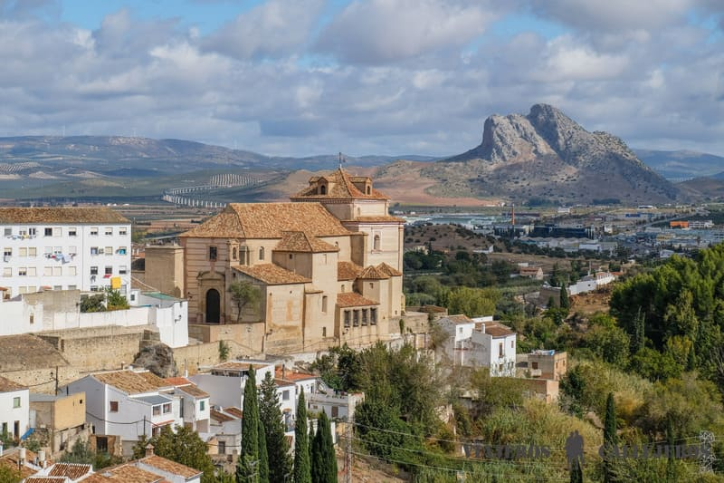
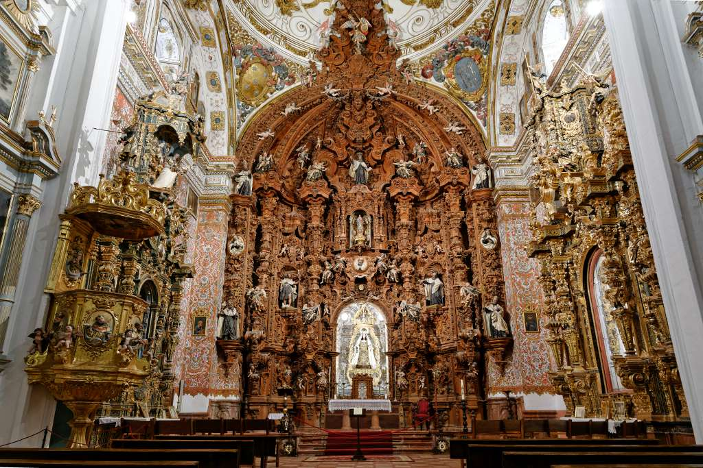
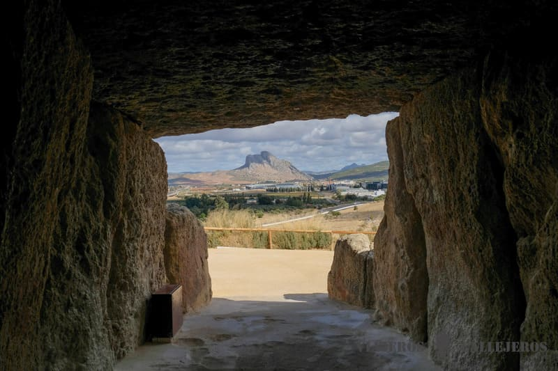
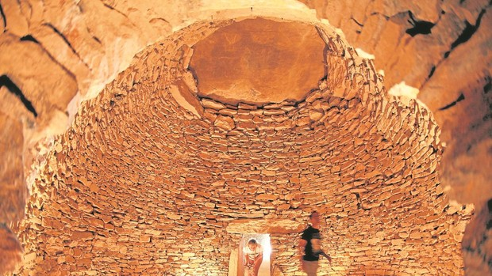
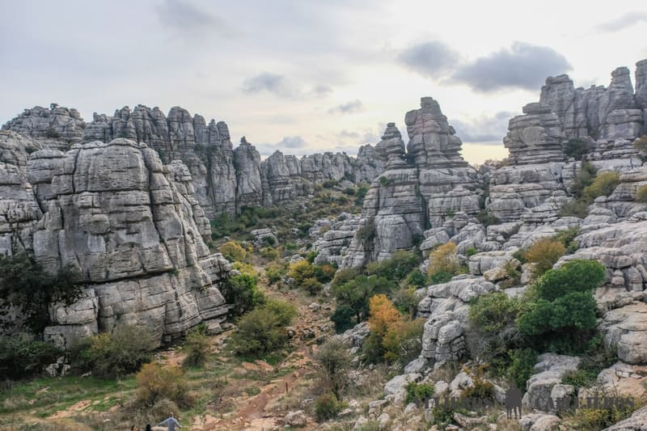

Una de las mejores cosas que hacer en Antequera es llegar a primera hora, para empezar la visita por este punto.
Este templo que se empezó a construir a finales del siglo XVI, casi al borde de un escarpe, fue el antiguo convento de los Carmelitas Calzados para más tarde convertirse en la sede de la antigua parroquia de Santa María la Mayor.
Merece la pena entrar en su interior barroco que alberga en su altar mayor un conjunto único de retablos, que te dejará sin palabras.
Al salir de la iglesia puedes disfrutar de las vistas a las casas de fachadas blancas y tejados rojos de la ciudad desde su mirador.


Otro de los lugares que visitar en Antequera más interesantes, declarado Patrimonio Mundial de la Unesco en 2016, es el Sitio de los Dólmenes de Antequera, formado por tres monumentos culturales (dolmen de Menga, dolmen de Viera y tholos de El Romeral) y dos monumentos naturales (La Peña de los Enamorados y El Torcal).
La Necrópolis Megalítica de Antequera, una de las más importantes de Europa, fue construida hace más de 6.500 años de antigüedad y destaca por su singular orientación, única en el mundo, ya que mientras que la mayoría de estos monumentos megalíticos estaban alineados para marcar la salida y la puesta del sol durante los solsticios de invierno y verano, el Dólmen de Menga se orienta hacia la Peña de los Enamorados y El Tholos de El Romeral hacía el paisaje kárstico de El Torcal, mientras que el Dolmen de Viera es el único orientado al sol.


Una ruta de senderismo pasando por las originales formaciones kársticas del Paraje Natural del Torcal, es nuestra ultima recomendación de la lista de lugares que ver en Antequera imprescindibles.
Este increíble paisaje originado inicialmente por movimientos de las placas tectónicas y posteriormente erosionados por el viento y la lluvia a lo largo de de millones de años, se encuentra a tan solo 15 kilómetros (30 minutos en coche) de Antequera, pudiendo disfrutar en el camino de unas increíbles vistas de Antequera y de la Peña de los Enamorados desde la carretera además de todo el entorno natural desde el Mirador de Diego Monea.
Si no tienes mucho tiempo te recomendamos dejar el coche en el parking y desde allí acercarte al Mirador De Las Ventanillas y hacer una de las dos rutas circulares de senderismo: la verde que son 45 minutos o la amarilla que son 2 horas.
Nosotros te recomendamos la verde y aunque es la más corta, te aseguramos que te da un idea bastante amplia del paisaje.
Una vez termines la ruta puedes acercarte en coche o andando al Monumento Natural del Tornillo, que tiene alguna de las formaciones rocosas más espectaculares.
